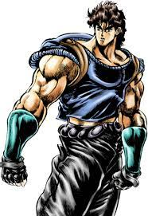
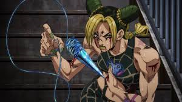
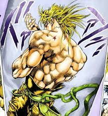
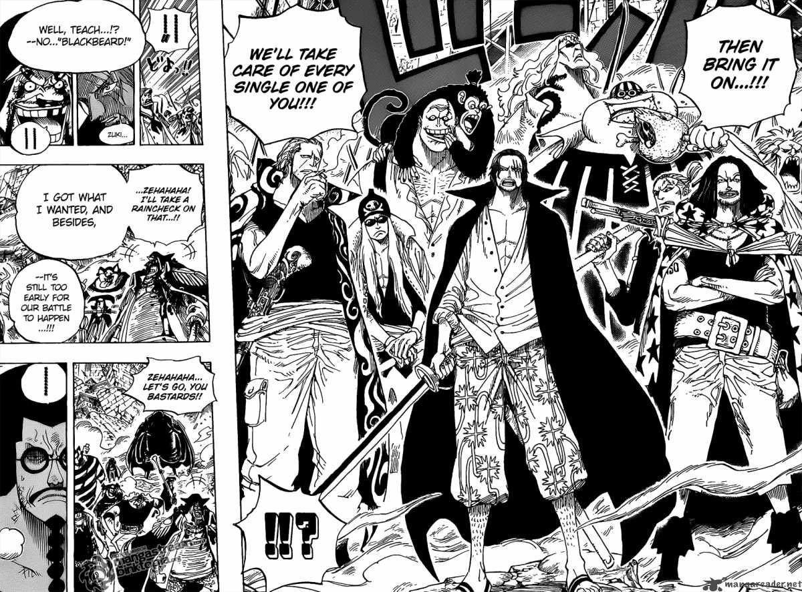

Image by Harry Nugraha
Different animations have taken over the world with their unique perspectives and goals they aim to teach us, humans. However, there has been nothing like “Chainsaw man” in history of the anime. A story talking about a boy who desires female attention but who is also considered as one of the strongest devil hunters follows incredible adventures that are extremely relatable to young generation. The topics include sexuality, violence, immaturity, and surprising plot twists. The reason Chainsaw man rapidly became popular in society is its accuracy to behavior of many teenagers in the world. As stated before, it is extremely relatable, describing things as attention, depression, loneliness, craziness, quick decisions, regrets, suffering, parties, making it appealing to the young audience. Chainsaw man is currently rated 8.4/10 on IMDb and 90% on Rotten Tomatoes. Not to mention, it only has 1 season yet, which shows how insanely good the show is compared to Attack on Titan, which has 9.1/10 on IMDb and 95% on Rotten Tomates with its 4 seasons. Chainsaw man has potential to outscore every other animation in history of shows and obtain the highest rating on platforms , as IMDb, in near future. Besides, the cause for its popularity can also be found in choice of its music, unique art style, relatability, and insane plot twists.
Denji in human form VS Denji in transformed form - Chainsaw man. Images by In Asian Spaces, Tyler Constable
Besides interesting storyline, the music chosen for Chainsaw Man is quite an astonishing selection. While in Attack on Titan, for instance, almost all the openings and themes throughout the show are mainly about being patriotic, or Jojo’s Bizarre Adventures, which have compositions that often suit genre of adventures, Chainsaw Man ranges from rock-n-roll, sad, and positive to melodic songs. It pretty much contains all the genres of music that are listened today by the young. For instance, ending of episode 12 features song called “Fight Song” by Eve, which sound depressive and at the same has glimpses of hope, despair, and optimism. It tries to show good time that there were before and that now everything has changed. Another one, opening of the anime, called “Kick Back” by Kenshi Yonezu demonstrates completely another music style compared to previously mentioned song. It is a blend of rock, pop, and electronica, with elements of alternative rock, hip hop, and jazz. This song, fortunately, is optimistic enough and perfect for the anime as it basically describes the mood of the plot during the whole season. It contains various crazy sound (in first few lines for example). The reason this opening is so “crazy” and dynamic in sound is because it perfectly captures how crazy the manga writer, Fujimoto is (in good terms). As stated earlier, Chainsaw man has plot twists which can never be expected by the audience ( for example, main or secondary main character suddenly dies. A person , of course, might feel shocked, yet it is completely normal thing in the anime). The anime also features surprising cameos by different characters. Usually, in other animations, one might see comeo/ reunion of old friends, or some characters who were considered to be dead. Consequently, spectator feels satisfaction. However, in Chainsaw Man, cameos are different. There might be sudden friendship or reunion during the battle between protagonists and antagonists, which one would not predict in common animations. Another song, ending of episode 3, published by MAPPA studio on Youtube, performs quite different style of music. The genre is rock-n-roll, yet even in such case, one would probably think right now that the composition might be similar to other rock-n-roll songs. It is simply not. The song differs from rock-n-roll pieces as Smells like teen spirit by Nirvana, or Rumbling by Sim, in the fact that it, again, contains elements of surprise. For instance, after a few seconds of listening, one might hear sudden voice quickly singing lyrics, which might be thought of as rap. This continues for following few more seconds and then it abruptly changes to quiet and calm music indicating plot changes written in the manga. Chainsaw man is quite popular for its music selection as its openings, endings , and other in-series themes are played by many great Youtube musicians, such as Animenz, or Fonzi . Therefore, for instance, previously mentioned ‘Kick Back’ by Kenshi Yonezu achieved certified gold record award by RIAA.
Chapters 95-97. Images by Tatsuki Fujimoto
If you notice, the drawing is similar to that of American comics(such as Marvel):
Therefore, Fujimoto was able to conquer not only local audience but also Western one. His art style, being simple in design as Macbook or Iphone by Apple, can be interpreted easily by teenagers. It doesn’t require “reading between the lines” or careful eye for seeing any details. This might be seen at the same time as disadvantage for people who love Easter eggs, yet such art style doesn’t need any. Jojo’s Bizzare Adventures, for instance, was written by Araki Hirohiko, whose art style is not rated positively by majority since not everybody likes muscular men:
  Images 1,3 by Araki Hirohiko. Image 2 by Mappa Studio
Jojo series is famous for its “muscular” art style. This can be alarming for some as it can be stated that this is a way
to “sexualize” characters, ultimately leading to debatable conversations. Meanwhile, Attack on Titan’s, written by
Hajime Isayama, art style looks more historic and dark. One piece, one of the most famous anime by Eiichiro Oda,
has miniature( i.e. many details can be put in 1 panel making it confusing sometimes) art style:
Attack on Titan. Image by Hajime Isayama
One piece. Image by Eiichiro Oda
Tatsuki Fujimoto art’s style is indeed appealing and plot could be understood by people with different viewpoints; The art style and plot development combine into a peculiar book that is called “Chainsaw Man”.
The anime can be boasted for various of its traits, but mainly it has unique connection with each viewer. Especially, fans have no idea even when it seems they can intuitively guess the repercussions The anime knows how to touch fans’ hearts; its simplicity helps audience feel better grasp of their events. Simultaneously, the music choice, covered by different eminent musicians from social platforms such as Youtube, supplements themes going in the series and describes enormous range of emotions, which can be applied to almost anybody. The art style, mixed with all of the features, helps to refine the art piece completely, leading to fully created composition.